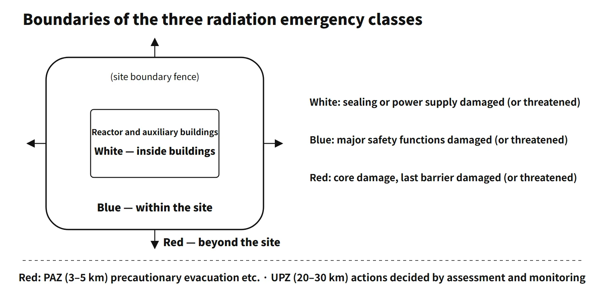

Radiation Protection & Emergency · C-RP-001
Radiation Emergency Classes — Grading an Emergency by Facility State and Expected Extent of Impact
Inside buildings, within the site or beyond the site: how graded emergency classes are defined, declared on a threat and linked to the PAZ and UPZ.
A radiation emergency is a situation in which radioactive material or radiation is released, or may be released, and urgent response is needed; emergency classification sorts it into a small number of escalating classes so that the response can be graded. Two criteria set the class: which barrier or safety function is damaged or threatened, and how far the radiological impact is expected to reach — inside buildings → within the site → beyond the site. The IAEA (GSR Part 7) uses general emergency / site area emergency / facility emergency / alert; the United States uses four classes, Notification of Unusual Event / Alert / Site Area Emergency / General Emergency.
Principle and mechanism
A three-class scheme by facility state and extent of impact
Some national schemes define three escalating classes directly by facility state and expected extent of impact. They correspond approximately to the IAEA facility emergency, site area emergency and general emergency.
| Class | Facility state (damage or threat of damage) | Expected extent of radiological impact |
|---|---|---|
| Facility level | Damage to the sealing of radioactive material, or to the power supply function that maintains the safe state | Inside the buildings of the nuclear facility |
| Site level | Damage to major safety functions as recovery capability degrades from the facility level, etc. | Within the site of the nuclear facility |
| General (off-site) level | Damage to the last barrier through core damage or melting, etc. | Beyond the site of the nuclear facility |
![Aerial view of a coastal nuclear plant with dashed outlines around the buildings labelled Facility: inside buildings, a blue site fence labelled Site: within the site and a red arrow leaving the site labelled General: beyond the site; below, schematic planning-zone bars for the PAZ (precautionary evacuation) and the UPZ (shelter, evacuation, KI by assessment) on a distance arrow, not to scale; on the right, a table of the three classes with facility state, expected impact area and typical response, and an escalation arrow noting that escalation is not necessarily step by step](../../assets/images/concepts/c-rp-001-radiation-emergency-classes/fig1-emergency-class-scope.webp)
Two points in such definitions matter.
First, every class carries the phrase "has occurred or may occur". The class is declared on the expected extent of impact at the moment damage occurs or is threatened, without waiting for a measured release. The highest class is declared not after radioactive material has left the site but when core damage and damage to the last barrier are threatened. That is what gives time to evacuate residents as a precaution before a release.
Second, the classes are tied to the state of the multiple barriers. One of the highest-class conditions in older PWR emergency plans was "two of the three fission-product barriers (fuel cladding, reactor coolant system, containment) damaged and the remaining one at risk of damage".
The emergency action levels (EALs) are in the licensee's plan
General definitions set only the facility state and the extent of impact. Which instrument readings and plant conditions trigger which class at each plant is set as emergency action levels (EALs) in the licensee's radiological emergency plan, which the regulator approves. The kinds of conditions typically assigned to each level in a three-class PWR scheme (actual thresholds are plant-specific):
- Facility level: severe fuel cladding damage (a sharp rise in coolant iodine activity), rapid steam generator tube rupture or reactor coolant leakage above a specified rate (or entry into the corresponding emergency operating procedure), loss of all AC power, loss of essential DC power, a fire that can affect safety systems, an earthquake exceeding the operating basis earthquake
- Site level: a loss-of-coolant accident beyond charging pump capacity, loss of all AC power lasting beyond a specified time, loss of hot shutdown capability, inability to inject boron when the reactor cannot be shut down, major steam generator tube leakage during loss of offsite power
- General level: an expected site-boundary dose rate above a specified criterion; two of three barriers damaged + the third at risk; accidents threatening core melt and a serious release (loss of coolant + no safety injection + threatened containment integrity; loss of secondary heat removal + feed-and-bleed unavailable; total loss of AC power + turbine-driven auxiliary feedwater unavailable, etc.); seizure of vital plant areas
The same event can also be seen escalating over time: loss of all AC power starts at the facility level, rises to the site level if it persists, and reaches the general level if auxiliary feedwater is also lost so that core melt is threatened. Modern EAL schemes, such as NEI 99-01 in the United States, are organized as a matrix by recognition category: radiation level and release, fission-product barriers, hazards, and system malfunctions.
What it means in a plant
- Graded response: in a typical three-class scheme, at the facility level the licensee reports to the regulator and local authorities, discloses information, takes first-aid measures and operates its emergency response facilities. From the site level, the licensee sets up its emergency headquarters and the national authority sets up its emergency headquarters and an off-site emergency management center, which runs together with a joint information center. The general level includes all site-level actions plus public protective actions such as precautionary evacuation of residents of the precautionary action zone.
- Target times: in the United States the licensee notifies state and local governments within 15 minutes of declaring an emergency class and the NRC immediately, no later than 1 hour. Licensee plans elsewhere set similar short targets for declaration, notification and activation of the emergency organization.
- Link to the planning zones: the area around a power reactor is divided into a precautionary action zone (PAZ) and an urgent protective action planning zone (UPZ). At the general level the PAZ gets precautionary evacuation and similar actions before a release; in the UPZ, sheltering, evacuation and thyroid-blocking agents follow dose assessment, environmental monitoring and the off-site center's decision. Zone radii are planning boundaries, not the distance radiation reaches.
- Termination: when the plant condition and environmental dose rates stabilize below the lowest class's declaration criteria, the emergency is terminated in consultation with the off-site emergency organization.
Regulatory and design criteria
The references below are international and US examples.
- IAEA GSR Part 7 (2015): classification system of general emergency / site area emergency / facility emergency / alert (plus other nuclear or radiological emergencies).
- US 10 CFR 50.47(b)(4) and Appendix E, NUREG-0654: four classes — Notification of Unusual Event / Alert / Site Area Emergency / General Emergency; state and local governments notified within 15 minutes of declaring a class (Appendix E IV.D.3), the NRC no later than 1 hour (10 CFR 50.72(a)(3)).
- NEI 99-01 (Rev.6, NRC-endorsed 2013): EAL development methodology organized by recognition category.
Easily confused pairs
| Three-class scheme (example) | United States (NRC) | IAEA (GSR Part 7) |
|---|---|---|
| (none) | Notification of Unusual Event | — |
| Facility level | Alert | Alert / Facility Emergency |
| Site level | Site Area Emergency | Site Area Emergency |
| General level | General Emergency | General Emergency |
The correspondence is approximate; the definitions are not word-for-word identical. Classes are not set by release quantity alone — they combine facility state with expected extent of impact. Also do not confuse the response classes used while an accident is in progress with INES (levels 0–7), which is a scale for evaluation after the event.
Key points at a glance
- Purpose: grade the response to a radiation emergency into a few escalating classes.
- Two criteria: facility state (which barrier or safety function is damaged or threatened) × expected extent of impact (inside buildings / within the site / beyond the site).
- Facility level: sealing or power supply function damaged (or threatened); impact expected inside buildings.
- Site level: major safety functions damaged (or threatened) through degraded recovery capability; impact expected within the site.
- General level: last barrier damaged (or threatened) through core damage or melting; impact expected beyond the site.
- Declaration principle: declared on the expected extent of impact when damage occurs or is threatened → time for precautionary protective actions before a release.
- Declaration criteria: plant-specific EALs in the licensee's emergency plan, approved by the regulator; modern schemes use recognition-category matrices (NEI 99-01).
- Target times (examples): US — state and local notification within 15 minutes of declaration, NRC within 1 hour.
- Public protection at the general level: precautionary evacuation etc. in the PAZ; in the UPZ sheltering, evacuation and thyroid-blocking agents decided from assessment and monitoring.
- International classes: IAEA alert / facility / site area / general emergency; US NOUE / Alert / Site Area / General Emergency; not the same as INES.
